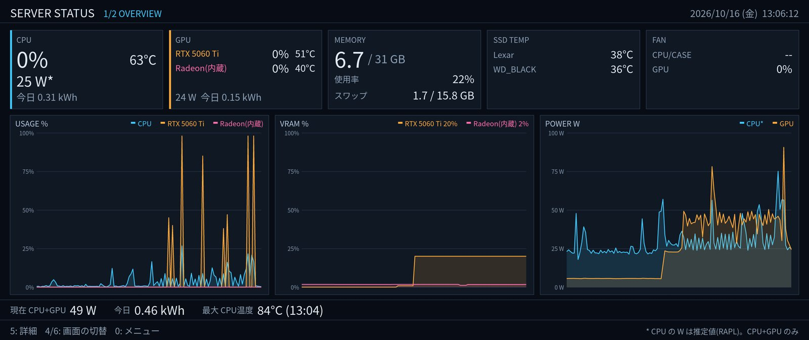
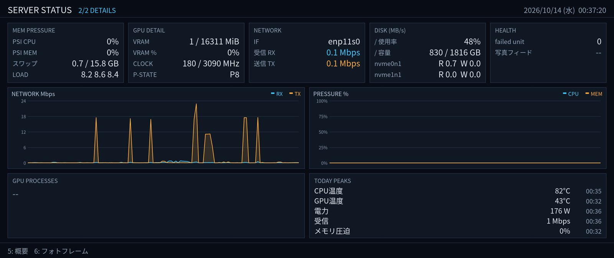
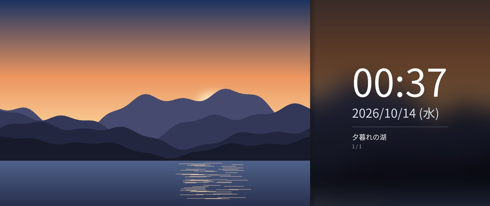
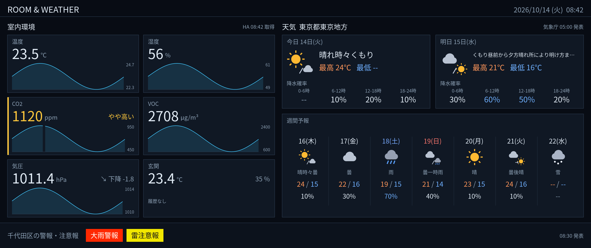
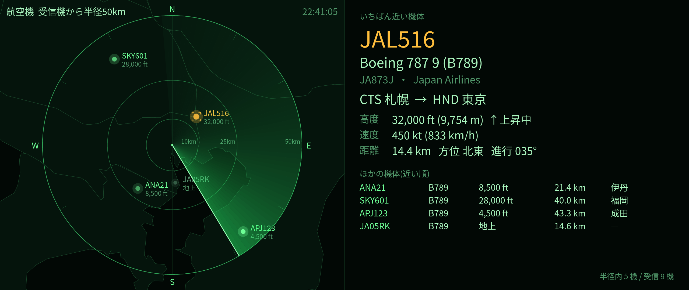
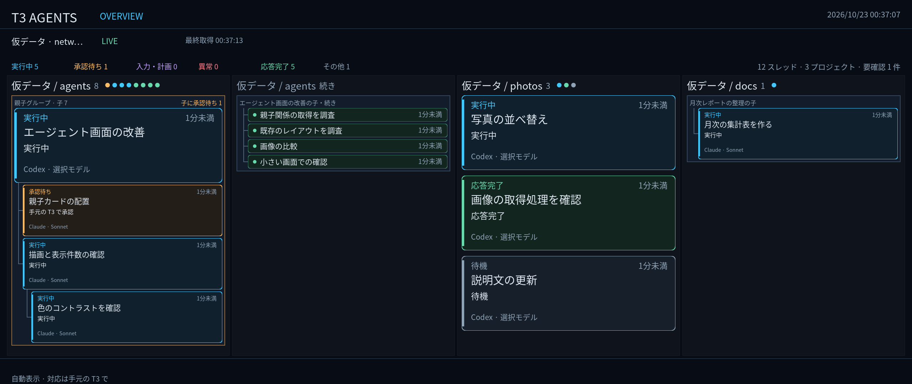
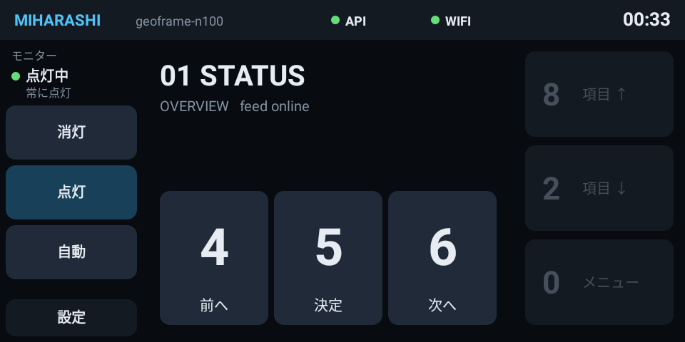

地震と災害を、どの画面の上にも
住んでいる地方で震度 4 以上、全国で震度 5 弱以上の地震は、震源と震度の地図を重ねて知らせます。自宅から 50km 以内に特別警報や土砂災害危険警報が出たときも同じです。データは気象庁。
01 / Screens
4 / 6 で画面を切替、
8 / 2 / 5 で画面内を操作。



写真は公開用に用意した風景画像です。実機では GEOFRAME(写真サーバー)の写真を表示します。以下の 3 画面は、位置や個人のデータを公開せずに表示内容を伝えるため、実装済みの描画処理に仮データを渡した見本です。実際の観測値・予報・作業状況ではありません。



T3 Agents / In motion
30 秒版では、T3 Code との連携の仕組みと、親子でまとまった一覧 → 新着の中央通知 → 一覧への復帰 → 同じスレッドの応答完了を紹介します。子は親の下に線でつなぎ、承認待ちの子がある組は枠をアンバーにします。T3 Code 連携は設定で有効にする読み取り専用の機能で、会話本文は取得しません。
両版とも公開用の仮データです。実際の作業状況ではありません。音声なし・自動再生なし。再生ボタンで開始できます。
連携図と新着・応答完了の通知を、15 秒にまとめた短縮版です。
02 / Features
連携先や表示内容は、
自分の環境に合わせて設定。
住んでいる地方で震度 4 以上、全国で震度 5 弱以上の地震は、震源と震度の地図を重ねて知らせます。自宅から 50km 以内に特別警報や土砂災害危険警報が出たときも同じです。データは気象庁。
写真の撮影地から、自宅を離れた「旅」と、いつもの暮らしの「季節」に分けて巡回します。区切りには、行き先の地図と日付のカードを挟みます。
ADS-B 受信機(readsb)の情報から、近くを飛ぶ機体を近い順に並べ、機種・登録記号・運航会社・経路を表示します。独立したレーダー画面で表示し、8 / 2 で注目する機体を選べます。
Home Assistant の温度・湿度・CO₂ などと過去 24 時間の推移を表示。気象庁の今日・明日・週間の予報と、自宅の市町村の警報・注意報をまとめます。
T3 Code のプロジェクトとスレッドをカードで並べ、状態の変わったものを中央に表示します。サブエージェントは親の下に線でつないで並べ、承認待ちがあれば枠で知らせます。会話本文は取得せず、読み取りだけで動きます。連携は設定で有効にします。
設定した順番と時間で画面を切り替えます。操作すると既定で 5 分休み、そのあと巡回に戻ります。API から巡回を止めたままにすることも、再開することもできます。
Home Assistant の在宅判定で、不在が続けば消灯し、帰れば点灯します。アラートは消灯中でも点けて見せます。手動の「常に点灯 / 常に消灯」も切り替えられます。
Android 化した Echo Show 5 が、専用の操作盤になります。画面内の操作やメニューからの直接選択、モニターの消灯・点灯・自動に対応。操作ラベルと、今の画面や巡回の状態も手元で分かります。
GPU 描画を設定で選ぶと、写真の拡大・ぼかし・重ね合わせを内蔵 GPU(OpenGL ES 3.2)で行います(既定は CPU 描画)。作者の実機で写真画面の CPU 使用率の中央値は約 0.8%(1 コア = 100%)でした。測定条件は GPU 描画の検証記録にあります。
航空機の画面では、既定で 5 分ごとに短いグリッチと暗転を挟み、表示位置を数 px ずらします。間隔や対象画面は設定で変更できます。T3 Agent 画面はこの演出に未対応です。
5 画面すべてが初期設定で出るわけではありません。室内環境と天気には Home Assistant または予報地域、航空機には readsb の接続先が必要です。T3 Agent・自動巡回・操作パネル API は既定で無効のため、設定で有効にします。モニターの在宅連動には Home Assistant の設定が必要です。手順は 使い方にあります。

03 / Control panel
4 / 6 で画面切替、8 / 2 / 5 で画面内を操作し、0 でメニューを開きます。Echo Show 5 の専用アプリでは、操作の意味をラベルで示し、メニューの行から直接画面を選べます。
04 / Architecture
表示は内蔵 GPU、計算は別の GPU、という構成でも、1 枚の GPU の構成でも動きます。表示先のカードとコネクター、監視する GPU は設定で選びます。GPU が使えなければ CPU 描画に戻ります。
logind の seat から表示と入力のデバイスを受け取り、VT を切り替えれば手放して、戻れば復帰します。systemd で起動し、落ちても自動で立ち上がります。PoC-002 時点で 12 時間の連続試験に合格しています。
05 / Roadmap
進み具合は
ロードマップ(#3)で。
DRM/KMS への描画、日本語・写真・グラフ。seat / VT、systemd、12 時間試験。
地震・災害アラート、旅ごとの写真、航空機、在宅判定でのモニター消灯。
内蔵 GPU での合成。Echo Show 5 の操作パネルと、その API。
画面の登録と操作の統一。室内環境と天気、独立した航空機画面、T3 Agent、無人時の自動巡回。
次は日常運用の仕上げです。現在の版での長時間試験、ブート時の自動起動の確認、写真のディスクキャッシュ、テストの CI、モニターのつなぎ替え、リリースノートを MVP(#7)で進めます。
06 / FAQ
作っている側が、
聞かれそうだと思った質問です。
いいえ。TUI 風の見た目ですが、ピクセル単位で描く全画面のアプリです。文字・写真・グラフを同じ画面に描きます。
要りません。Linux の DRM/KMS へ直接描きます。デスクトップ環境の無いサーバーでも、モニターをつなげば表示できます。
Linux で DRM/KMS が使える GPU があれば動きます。作者の実機は、表示に CPU 内蔵の GPU を使い、計算用に別の GPU を積んだ構成です。特定の型番やメモリ容量を前提にはしていません。
ドライバーやセンサーが値を出していれば表示します。出ていない値は「--」になります。CPU の電力は RAPL からの推定値で、システム全体の消費電力ではありません。
使えます。操作パネルを有効にしていれば、キーボードが無くても起動し、あとから挿されたテンキーも自動で使い始めます。
GEOFRAME(自宅の写真サーバー)から取得します。1 枚のファイルを指定して表示することもできます。
なりません。Home Assistant と通信できないときは点灯させておきます。手動の「常に消灯」も、通信できない状態が続けば自動に戻ります。
ソースは公開していますが、今は作者の環境で毎日使いながら育てている段階です。表示先や監視対象は設定で変えられるようにしています。
Read more
使い方、要件、技術設計、検証記録をまとめています。